Depois de atualizar o servidor, deixe os terminais do cliente na mesma versão. Siga as etapas e marque cada uma.
Os caminhos abaixo mudam sozinhos conforme você digita.
No terminal, clique com o botão direito no atalho do FuturaServer → Propriedades e olhe o campo Destino:
No navegador do terminal, acesse repositorio.futurasistemas.com.br e faça login. Depois:
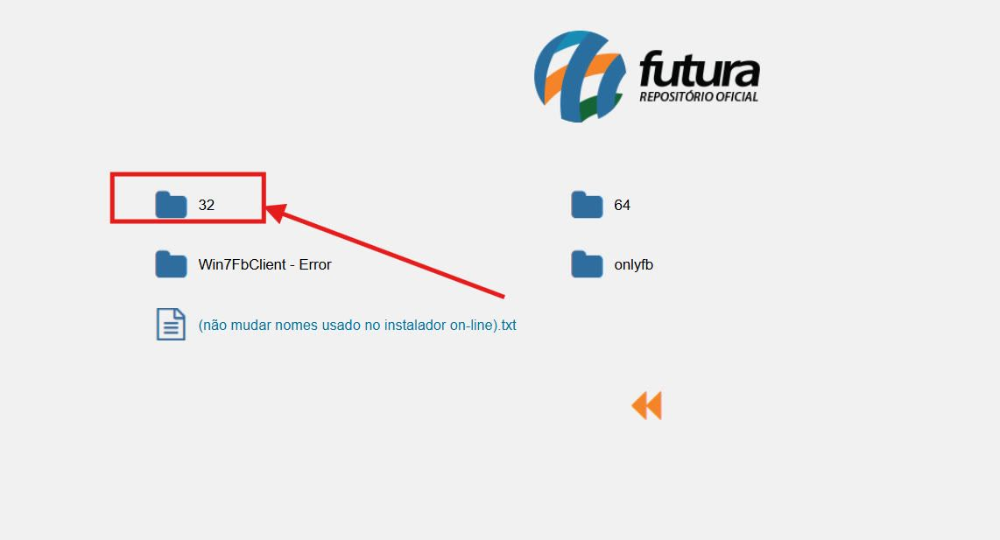
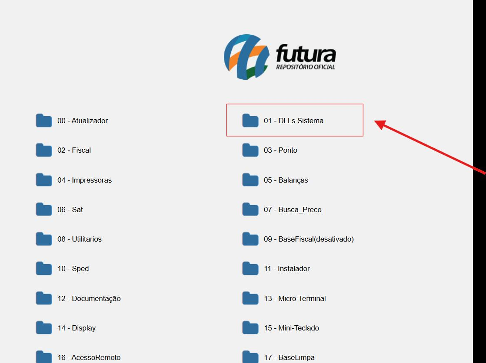
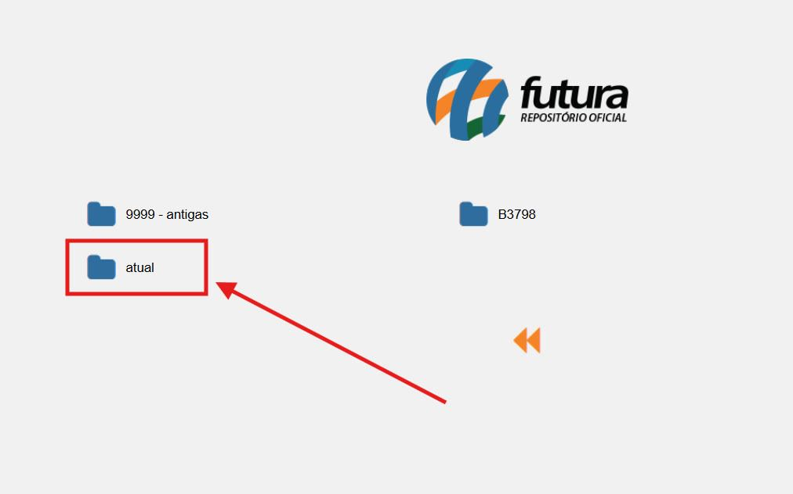
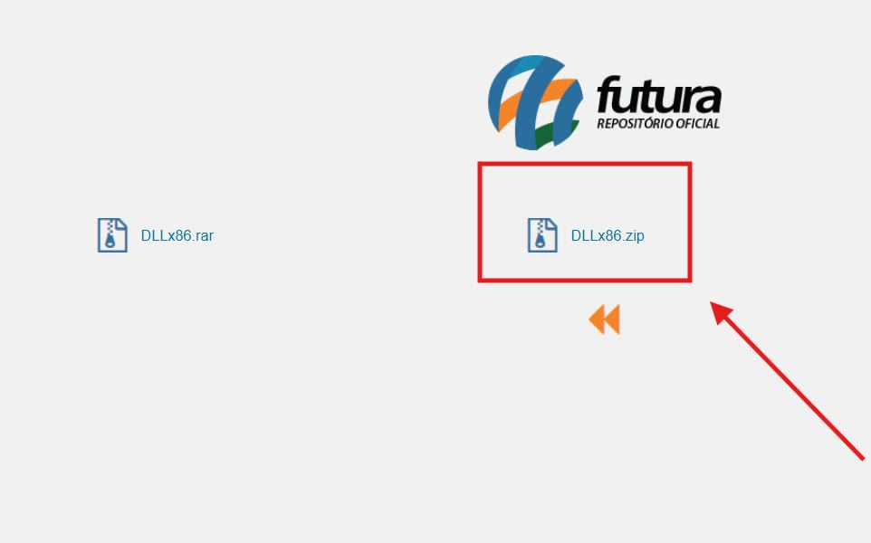
C:\FUTURA\dll (Ctrl + V). Se já existir um antigo, Substituir. Se a pasta dll não existir, crie (botão direito → Novo → Pasta).C:\FUTURA.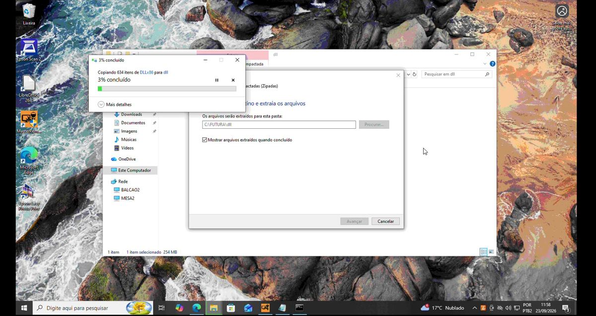
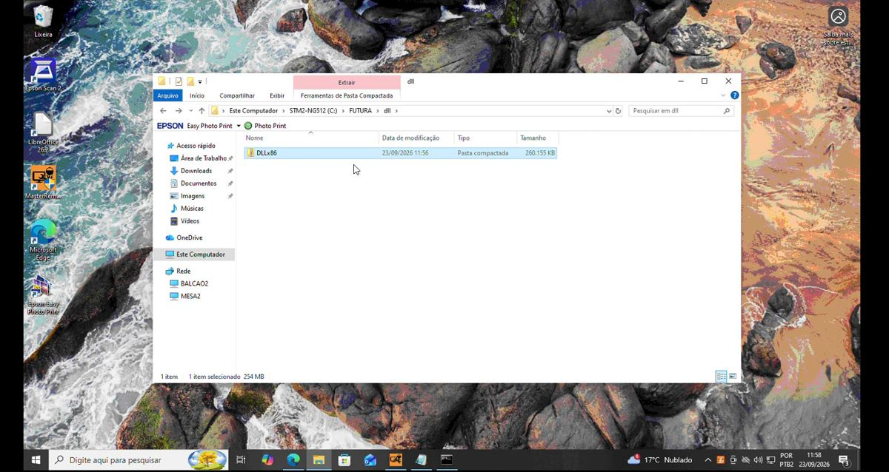
Aperte Windows + R, cole o caminho e clique em OK (se não abrir pelo nome, use o IP):
Selecione só estes 3 (segure Ctrl): FuturaServer, FuturaUtil, PDV. Copie, entre em C:\FUTURA, cole e escolha Substituir.
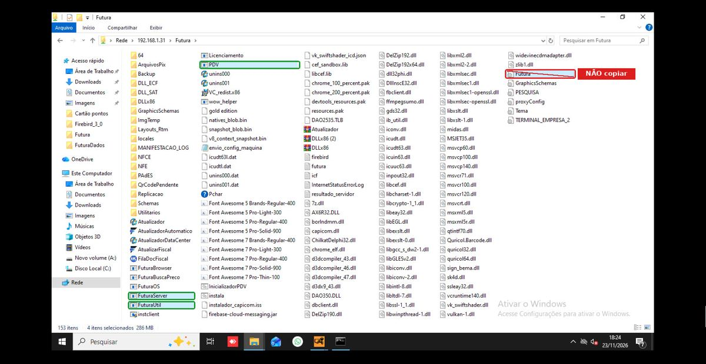
Em C:\FUTURA, botão direito no instala (Arquivo em Lotes) → Executar como administrador. Se aparecer "O fornecedor não pôde ser verificado", clique em Executar. Espere terminar e confirme com OK as mensagens de registro.
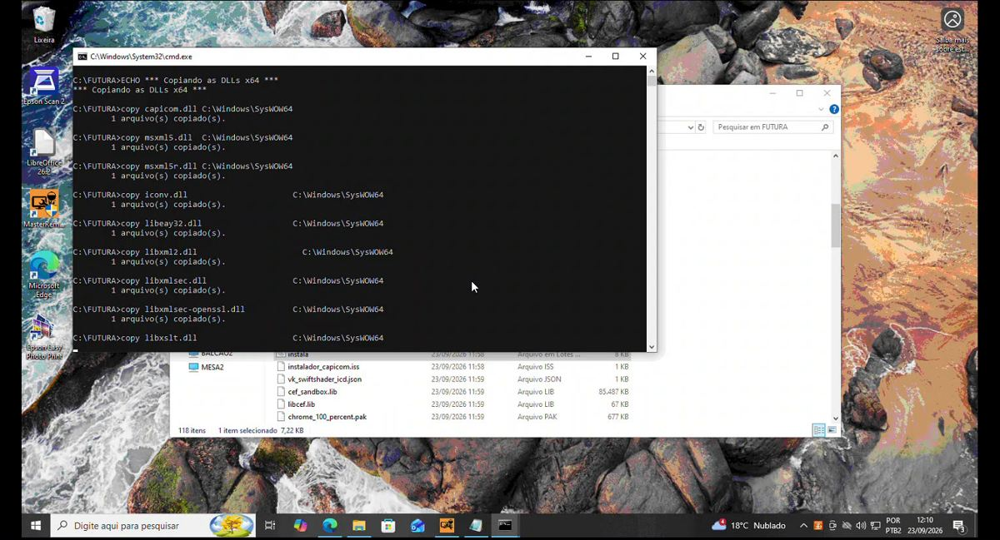
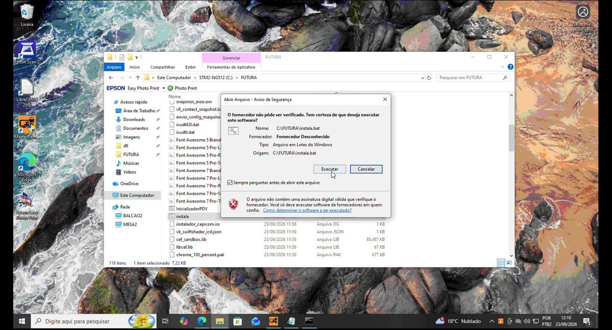
C:\FUTURA, selecione FuturaServer e PDV (com Ctrl).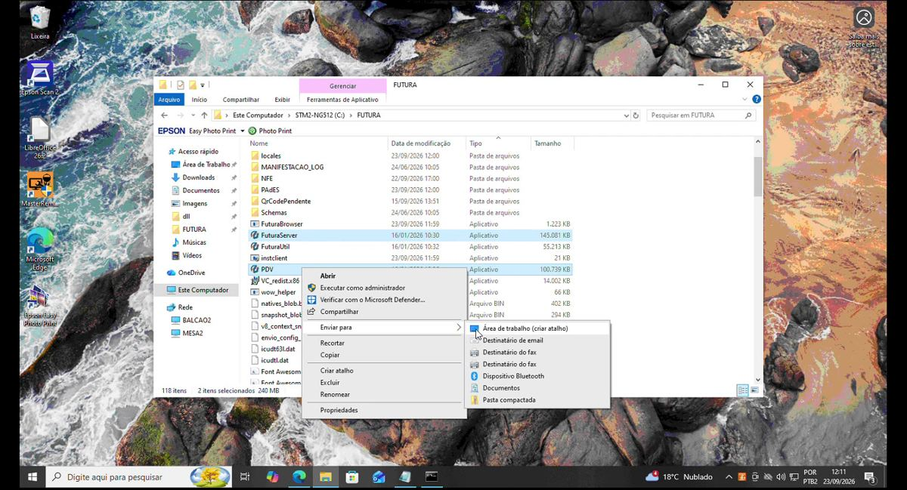
Abra o novo atalho do FuturaServer. Na tela de login, digite qualquer coisa no usuário e na senha e clique em Confirmar. Faça o mesmo no PDV. O que apareceu?
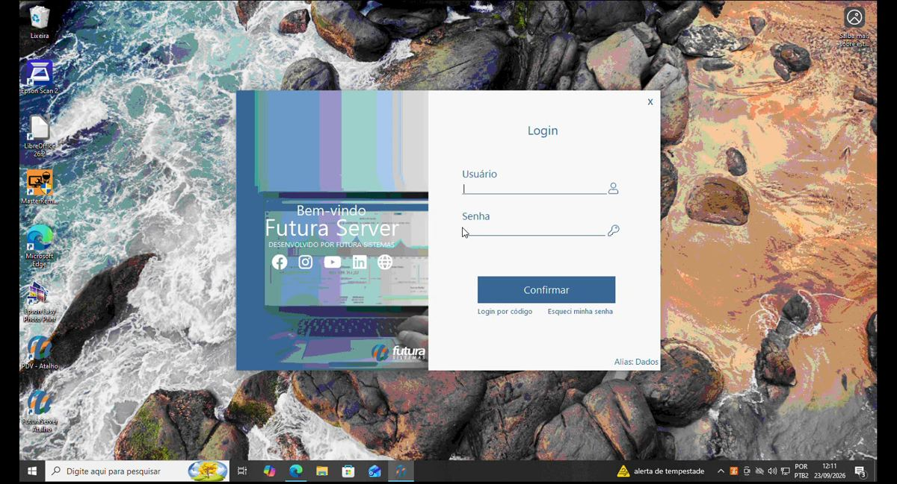
Aqui não se copia nenhum arquivo: os executáveis já foram atualizados no servidor. Só refaça os atalhos.
Na área de trabalho, apague os atalhos do FuturaServer e do PDV (tecla Delete).
Aperte Windows + R, cole o caminho e clique em OK (se não abrir pelo nome, use o IP):
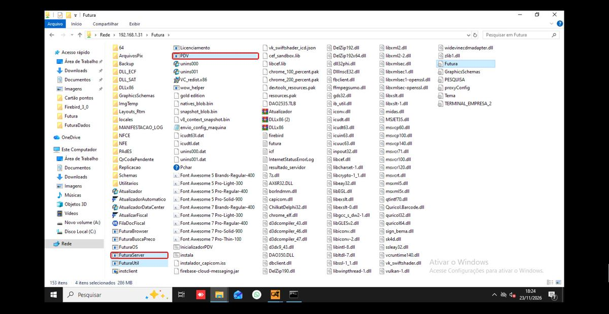
Abra o atalho, digite qualquer coisa no usuário e na senha e confirme. O que apareceu?